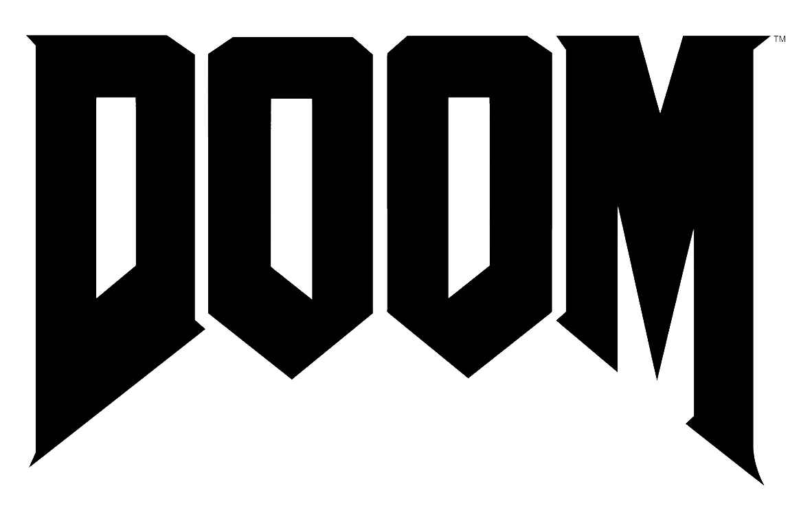

My hobbies
- Giocare ai videogames (il mio preferito è ).
- Informarmi sulle nuove tecnologie (smartphone, computer, console...).
- Ascoltare la musica e soprattutto il metal, in tutte le salse!
- Leggere i manga Shōnen come DRAGON BALL o ONE PIECE ad esempio.
- Leggere a volte un buon libro, anche se vorrei leggere di più, mi manca il tempo!